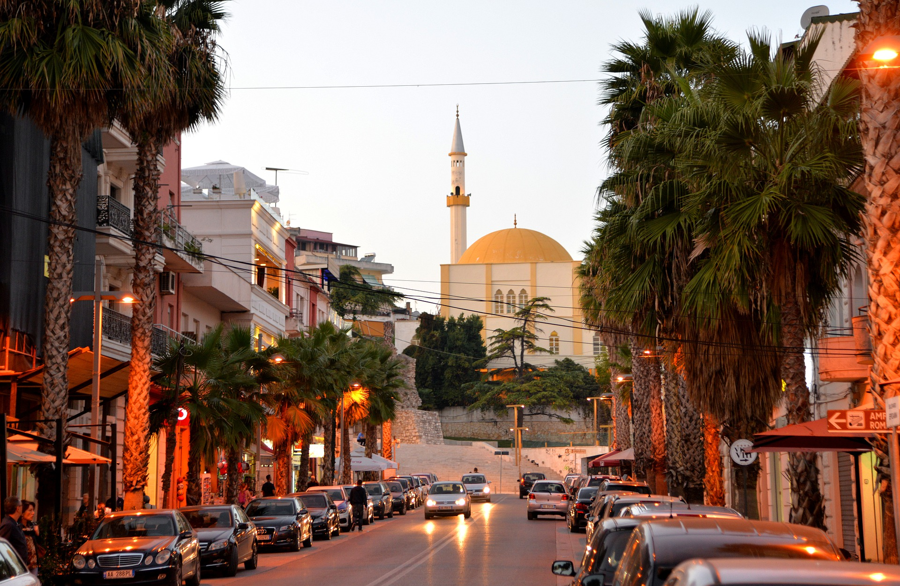

Средние температуры января: +8-9 °C, июля: +24-25 °C.
Осадков: 800 – 2000 мм в год.
Климат прибрежной (западной) части страны – средиземноморский, переходящий к востоку в континентальный. Средняя температура июля на побережье – от +28 до +32° С, января – от +8 до +10° С. Высокие летние температуры на побережье переносятся легко из-за постоянно дующего средиземноморского бриза. Туристический сезон продолжается с мая по сентябрь, но на воздухе комфортно находиться также в апреле и октябре. В году около 300 солнечных дней. Ранней весной и поздней осенью идут дожди. В горах Албании климат значительно более холодный – зимой температура может опускаться до -20° С.
 По территории страны есть три вида транспорта – маршрутки, автобусы и поезда. Маршрутки называются «фургон» – это самый распространённый вид транспорта. Представляют собой мини-автобусы бело-красной раскраски. В путь такие «фургоны» отправляющиеся в путь, тогда, когда все места заняты. В каждом городе есть станция таких маршруток. Самый оживлённый оживление там наблюдается в первой половине дня, после полудня активность заметно спадает. Оплата производится непосредственно водителю, цены очень низкие – порядка 300-500 ALL на популярных направлениях.
Автобусы, конечно, более комфортное средство передвижения. Ходят по расписанию. Курсируют в основном до 3-4 часов дня.
Между городами Албании можно передвигаться и на поездах. Железнодорожное сообщение связывает города Тирану, Дуррес, Шкодер, Поградец, Влору и Элбасан. Наиболее оживлённое движение между Тираной и Дурресом – до шести поездов в день. На остальных направлениях предусмотрено 1-2 поезда в сутки. Прокат автомобилей – достаточно новая услуга для Албании. Взять машину в прокат можно в крупных городах, и для этого понадобятся международные права. Прокатных компаний пока немного, зато представлены крупные европейские – Hertz, Avis и Europcar.
Как вариант – всегда можно договориться с местным таксистом о его услугах с почасовой оплатой.
Несмотря на то, что Албания и ее народ довольно продолжительное время жили в атмосфере тоталитарного режима Ходжи, большинство албанцев сохранили свои культурные традиции и национальные особенности, что на сегодняшний день особенно интересно тем, кто посещает эту страну в качестве туриста. Особо поражает многих путешественников, то обстоятельство, что на небольшой территории такой страны, как Албания, культурные традиции того же свадебного обряда довольно существенно отличается у одного албанского селения, от того же обряда расположенного практически рядом. В этом, пожалуй, и есть основная особенность, того, что обычаи и традиции Албании довольно пристально изучаются европейскими этнографами.
Албания не так давно стала активно развивать международный туризм. Преимущества отдыха здесь – хороший выбор разнообразных пляжей, приятные цены на питание и нетронутая природа. Говорить о сервисе в этой стране пока рано :). Албанцы ещё не научились предоставлять сервис как греки или турки. Но в этом и заключается определённый шарм отдыха – всё достаточно просто и незамысловато.